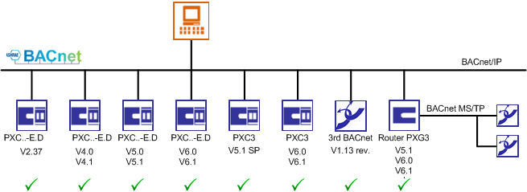

Compatibility List
Desigo CC supports Desigo system versions as of V2.37.

|
Compatibility List | |||
Topic | Detailed description | Version | Support |
BACnet-IP | BACnet protocol revision | 1.18 | Yes |
Desigo PX | Automation station BACnet-IP (Lon over router PXG3.L) | >= 2.37 | Yes |
Create and delete dynamic BACnet objects | <5.0 | No | |
>= 5.0 | Yes | ||
BACnet Backup and Restore | <4.0 | No | |
>= 4.0 | Yes | ||
Desigo RX | Room automation integration over Desigo PX | >= 2.37 | Yes |
Desigo Xworks Plus ABT Site | EXP export file | >= 2.37 | Yes |
EXP and zip export file | >=4.0 | Yes | |
System version V2.37
General
Compatibility to Desigo system version V2.37 is guaranteed with just a few limitations.
Online Data Import
- BBI Upload
A BBI upload is not possible since the *.EXP file is not saved in the device object for the automation station. So that the required BACnet object information is missing.
Alarm Response
- Destination and Recipient List
- Desigo Insight must check the entries on the destination and recipient list if extending an existing Desigo Insight project with Desigo CC. Desigo Insight must delete any unneeded recipients. Use the Desigo Insight Notification Wizard to delete them.
- A maximum of 20 recipients can be saved to the destination list and 30 recipients to the recipient list. The destination and recipient list simply needs to be checked for sufficient recipient space if a project is still operated with Desigo Insight.
The destination and recipient list is synchronized when saving a new recipient. An error in the firmware doubled the number of existing recipients. The new recipient does not receive any notifications if there is insufficient recipient space. - Device alarm
- The object model PX_Dev_V237_10 is used. A device object is used for the device alarm.
- The Application View, rather than the Management View is displayed, if a device alarm occurs and the operator navigates from the alarm list to the source, since the data point is first searched in the Application View and found on the schedule object. For versions > 2.37, the device alarm on the device info object is available and displayed in the Management View.
- Alarm Tables
- The Alarm Table PXDeviceConfigurationv237 is used.
Discreet Loop Object
- The object model FW_HvacV237_PIDCtr_10 is used.
Trendlog Object
- The object model PX_TRNLOG_v237_10 is used.
- The Settings expander and, in the Command configuration, the property Enable is used.
- Trendlog multiple object is unavailable.
Scheduler
- The scheduler object Sched (Any) is unavailable.
System Version V4
Alarm Response
- Device alarm
- The object model PX_Dev_10 is used. A device info object is used for the device alarm.
- The management view displays if a device alarm occurs and the operator goes to the source from the alarm list.
- Alarm Tables
- The alarm table PXDeviceConfiguration is used.
Discreet Loop Object
- The object model PX_PID_CTR_10 is used.
Trendlog Object
- The object model PX_TRNDLOG_10 is used.
- Trendlog multiple object is unavailable.
Scheduler
- The scheduler object Sched (Any) is unavailable.
System Version Desigo V5 and Higher
Trendlog Object
- Trendlog multiple object is not supported.
Scheduler
- The scheduler object Sched (Any) is supported.
Visibility of Object Properties changed in standard library V5.0
The visibility of input and output objects are extended with additional properties. The data must be reimported for the updated Desigo CC projects to display the values. The properties values remain empty or are set to 0 if the data is not updated.

They are already visible when using the BTL library; no update is required.
Extension of visibility in 5.1 | |||||||
Property | Description | AI | AO | BI | BO | MI | MO |
ComgSta | Commissioning State | X | X | X | X | X | X |
TiMonOn | Monitoring time switch-on |
|
| X | X |
|
|
TiMonOff | Monitoring time switch-off |
|
| X | X |
|
|
Slpe | Slope | X |
|
|
|
|
|
Icpt | Intercept | X |
|
|
|
|
|
DlyOn | Switch-on delay |
|
|
| X |
| X |
DlyOff | Switch-off delay |
|
|
| X |
| X |
TiOffMin | Minimum Switch-off time |
|
|
| X |
| X |
TiOnMin | Minimum switch-on time |
|
|
| X |
| X |
TiPln | Polling time | X | X | X | X | X | X |
HrtBt | Heartbeat |
| X |
| X |
| X |
Update the automation station
- In System Browser, select Management View.
- Select Project > Subsystem Networks > [Network name] > Hardware > [Automation station name].
- In Extended Operation tab, select the Import property.
- Click Start.
- Repeat procedure for each automation station.
- The updated values are displayed with the new properties.
Simatic HVAC
Simatic HVAC uses the same library as Desigo PX. Due to the proprietary implementation of the Desigo PX PID controller, the properties Integral action time Tn and Derivative action time Tv for Simatic HVAC cannot be displayed in the Extended Operating tab. Both properties can be displayed and operating in the BACnet-Editor tab and in the Properties expander.
For addition configuration, see Modifying the display for the PID controller in the Step-by-step.